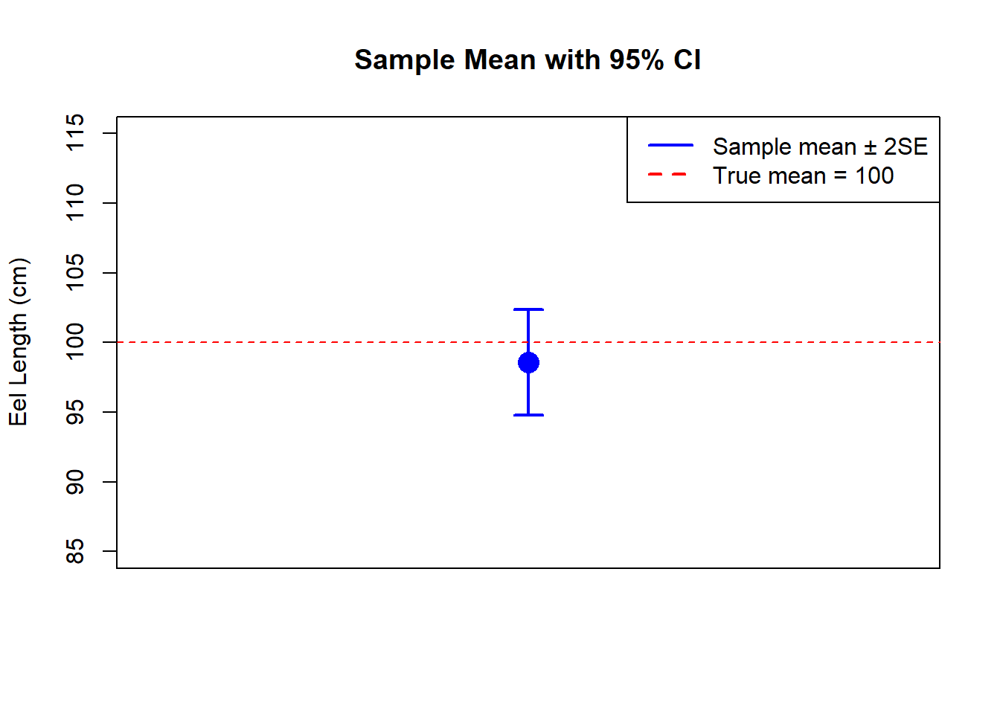

Dates: Wednesday September 9 · Friday September 11
(Note: Monday September 7 is Labor Day - no class)
5.1 Learning Objectives
By the end of this week, you should be able to:
Explain the difference between a population and a sample.
Define and calculate the standard error of the mean.
Construct and interpret a 95% confidence interval using the rule of thumb.
Explain why larger sample sizes produce more precise estimates.
Recognize that random sampling introduces variability in our estimates.
5.2 Background and Conceptual Introduction
Suppose you want to know the average daily milk production of all dairy cows in Tennessee - that is the population. You cannot measure every cow in the state, so you measure a sample of 40 cows. You calculate the sample mean: 24 liters per day.
But here is the key question: how confident are you that the true population mean is close to 24? If you had sampled a different set of 40 cows, you would likely get a slightly different mean - maybe 23.5 or 24.8. This variation from sample to sample is called sampling variability, and it is at the heart of statistical inference.
Think of it like casting a fishing net. Each time you cast your net, you catch a different mix of fish. The average size of fish in your net is a good estimate of the average size of all fish in the lake - but it will not be perfect every time. How close your estimate is to the truth depends on the size of your net (sample size) and how variable the fish sizes are.
The standard error and confidence interval are tools that quantify our uncertainty. They tell us how far our sample estimate might be from the true population value.
TipThink About It 🧠
You sample 5 trees from a large forest and estimate the average diameter at breast height (DBH) to be 22 cm. Your classmate samples 50 trees from the same forest and estimates the average DBH to be 20 cm. Whose estimate is likely to be closer to the true population average? Why?
5.3 Key Concepts and Definitions
Population: The entire group of individuals or objects that you want to study. In practice, it is usually too large to measure completely.
Sample: A subset of the population that you actually measure.
Parameter: A numerical summary of a population (e.g., population mean \(\mu\)). Usually unknown.
Statistic: A numerical summary calculated from a sample (e.g., sample mean \(\bar{y}\)). Used to estimate the parameter.
Sampling variability: The fact that different random samples from the same population will give slightly different statistics.
Standard Error of the Mean (SE): A measure of how much the sample mean would vary across repeated samples. Calculated as:
\[SE = \frac{s}{\sqrt{n}}\]
where \(s\) is the sample standard deviation and \(n\) is the sample size. A small SE means our estimate is precise.
Confidence Interval (CI): A range of values that is likely to contain the true population mean. A 95% CI means that if we repeated the sampling process many times, about 95% of the intervals we constructed would contain the true mean.
(This “rule of thumb” uses 2 as an approximation; the exact value depends on sample size and will be refined when we cover t-tests in Week 10.)
Precision vs. Accuracy: - Precise estimate: small standard error, values close together. - Accurate estimate: close to the true population value (requires no bias in sampling).
5.4 How to Do It by Hand
NoteExample: American Eel Length
A fisheries biologist is studying American eels (Anguilla rostrata) in a New England pond. The pond has exactly 100 eels, and their true mean total length is known to be 100 cm. The biologist takes a random sample of 12 eels and records their lengths (cm):
Interpretation: Based on our sample of 12 eels, we estimate that the true mean eel length is between 94.8 and 102.4 cm. The true mean (100 cm) falls inside our confidence interval - our sample gave a good estimate!
5.5 How to Do It in Excel
Enter your 12 eel lengths in column A (cells A1:A12).
# Sample standard deviations <-sd(eels)cat("Std. deviation:", round(s, 2), "\n")
Std. deviation: 6.54
# Sample sizen <-length(eels)# Standard errorSE <- s /sqrt(n)cat("Standard error:", round(SE, 2), "\n")
Standard error: 1.89
# 95% confidence interval (rule of thumb: mean ± 2*SE)lower <- y_bar -2* SEupper <- y_bar +2* SEcat("95% CI (rule of thumb):", round(lower, 1), "to", round(upper, 1), "\n")
95% CI (rule of thumb): 94.8 to 102.4
# Visualize with a simple plot# The true mean (100 cm) is shown as a referenceplot(x =1, y = y_bar,xlim =c(0.5, 1.5), ylim =c(85, 115),pch =16, cex =2, col ="blue",xaxt ="n",xlab ="", ylab ="Eel Length (cm)",main ="Sample Mean with 95% CI")arrows(x0 =1, y0 = lower, x1 =1, y1 = upper,angle =90, code =3, length =0.1, col ="blue", lwd =2)abline(h =100, col ="red", lty =2) # true population meanlegend("topright", legend =c("Sample mean ± 2SE", "True mean = 100"),col =c("blue", "red"), lty =c(1, 2), lwd =2)

5.7 Interpretation and Common Mistakes
Effect of sample size on the standard error:
Notice that \(SE = s / \sqrt{n}\). As \(n\) gets larger, the standard error gets smaller. This makes intuitive sense: a larger sample gives you a more precise estimate of the population mean.
n
s
SE
5
6.54
2.92
12
6.54
1.89
50
6.54
0.92
100
6.54
0.65
For the same level of variability, tripling the sample size roughly cuts the SE in half.
WarningCommon Mistake: Confusing Standard Deviation and Standard Error
The standard deviation (SD) describes how much individuals in your sample vary from one another.
The standard error (SE) describes how precisely your sample mean estimates the population mean.
The SE is always smaller than the SD (for \(n > 1\)). Reporting the SE as a measure of data spread is misleading - it understates the true variability among individuals.
WarningCommon Mistake: Misinterpreting a 95% CI
A 95% confidence interval does NOT mean “there is a 95% chance the true mean is in this interval.” Once you have calculated an interval, the true mean is either in it or it is not. The 95% refers to the procedure: if you repeated the sampling 100 times and built 100 CIs, about 95 of them would contain the true mean. This distinction will matter more when we get to hypothesis testing.
5.8 Summary
A sample is used to estimate a population parameter when we cannot measure everyone.
Sampling variability means different samples give different estimates.
The standard error measures how much the sample mean varies from sample to sample: \(SE = s / \sqrt{n}\).
A 95% confidence interval (\(\bar{y} \pm 2 \times SE\)) gives a range of plausible values for the true population mean.
Larger sample sizes reduce the standard error and produce narrower confidence intervals.
5.9 Practice Problems
A wildlife manager samples 9 wild turkeys and records their weights (kg): 6.2, 5.8, 7.1, 6.5, 5.9, 6.8, 7.0, 6.3, 6.7. Calculate the mean, standard deviation, standard error, and 95% confidence interval. Show all steps.
A researcher estimates the average phosphorus concentration in a stream using two studies: Study A used \(n = 10\) samples (mean = 0.45 mg/L, SD = 0.12) and Study B used \(n = 80\) samples (mean = 0.42 mg/L, SD = 0.11). Calculate the standard error for each study. Which study provides a more precise estimate of the true mean? Why?
If you quadrupled the sample size (from \(n\) to \(4n\)), by what factor would the standard error decrease? Show this using the formula.